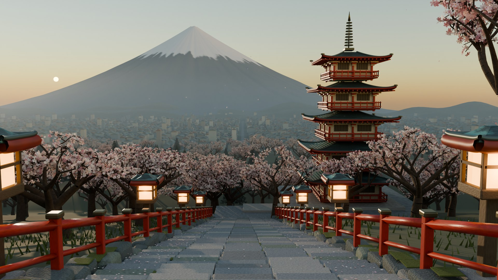

此瀏覽器無法啟動 WebGL，以下為 Cycles 渲染靜幀。
Arakurayama · 新倉山淺間公園
First Light
載入場景
程序生成 · Blender 4.5 → glTF → Three.js
富士山、忠靈塔與清晨的櫻花
拖曳旋轉 · 滾輪縮放 · 右鍵平移
關於這個場景
一份可重建的 Blender 場景，和它的即時版本
整個場景——五層忠靈塔、下行石階、朱紅欄杆、暖色燈籠、四種櫻花樹型、富士吉田市街與帶放射狀溝紋的富士山——都由一支 Python 腳本以固定亂數種子生成，不依賴任何外部貼圖或掃描資產。
Cycles 渲染以 AgX 色彩管理與清晨方向光完成；網頁版本把同一份 .blend 匯出為 6 MB 的 Draco glTF，在瀏覽器中以 GPU 實例化重建 196 棵櫻花樹、在著色器裡重現微風，並以 Three.js 燈光與天空重新打光。
- 物件
- 3,248
- Cycles 多邊形
- 34.3M
- 網頁三角形 / 幀
- 11.5M
- glTF 大小
- 6.4 MB
- 攝影機動畫
- 288 f · 24 fps
- 亂數種子
- 829
從腳本到瀏覽器
製作流程
-
01
scripts/build_scene.py以 bpy 模組在背景建立 12 個集合：地形、欄杆、五層塔、燈籠、櫻花、常綠樹、市街、富士山、飄落花瓣、天空與攝影機。程序材質、Geometry Nodes 微風與 90 片花瓣動畫皆在此定義。
-
02
scripts/render_scene.pypreview / still / animation / animatic 四種預設，Metal 或 CPU 裝置，可分段渲染與補算缺格，每批附 render_log.json。
-
03
scripts/validate_scene.py重新載入 .blend，確認五個獨立屋頂層、外部貼圖依賴為零、花瓣有位移，以及塔頂與富士山峰在關鍵影格的攝影機投影位置。
-
04
scripts/export_web.py不修改原始 .blend：以整朵花為單位抽樣櫻花（近景 34%、遠景 11%）、針葉減半、攤平程序材質為 PBR 數值、套用修改器並依集合合併，輸出 Draco 壓縮 glTF 與 export_manifest.json。
-
05
web/js/scene.jsThree.js 載入 glTF，將 392 個櫻花節點合併為 InstancedMesh，在頂點著色器中加入隨高度增強的微風、重建太陽與燈籠光源、漸層天空與大氣透視，並以 AgX 色調映射對齊離線渲染的觀感。
原始檔與成果
下載
.blend 作為 GitHub Release 附件提供，不佔 git 與 LFS 流量；也可用 build_scene.py 從腳本重建。
{kind=link}